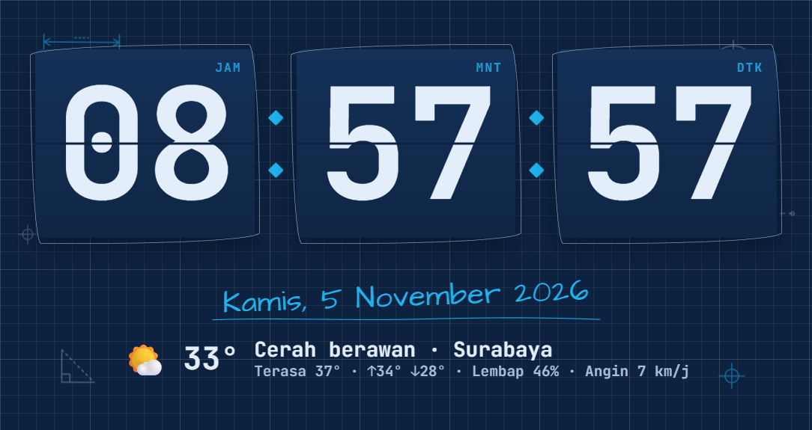
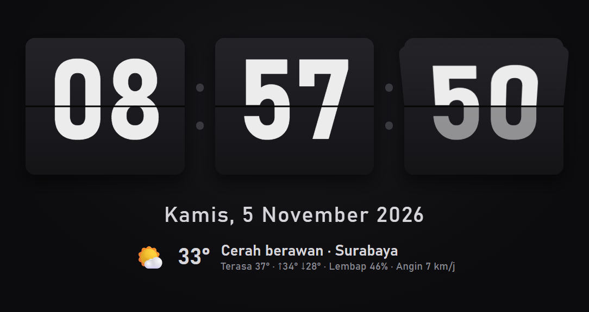
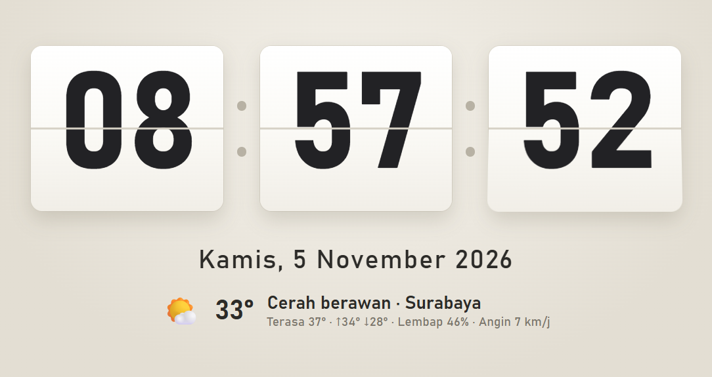
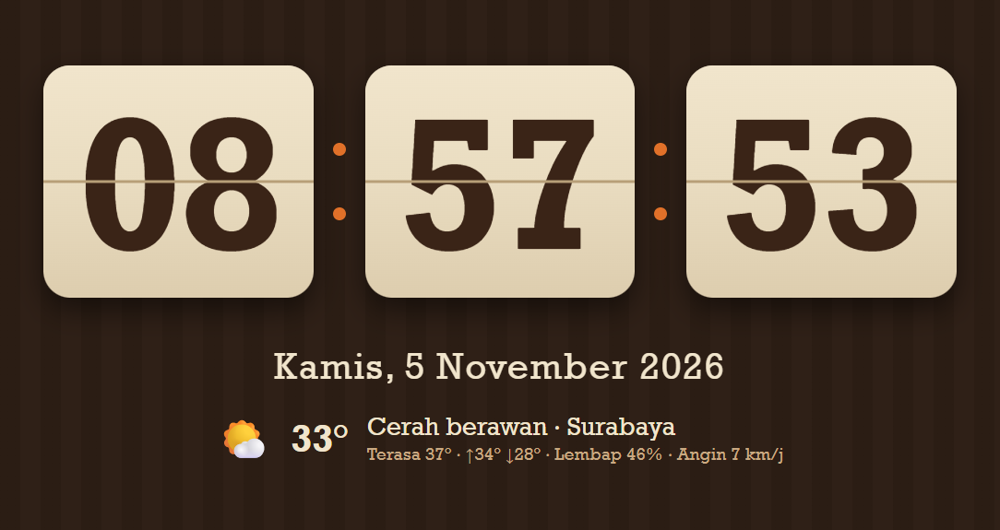
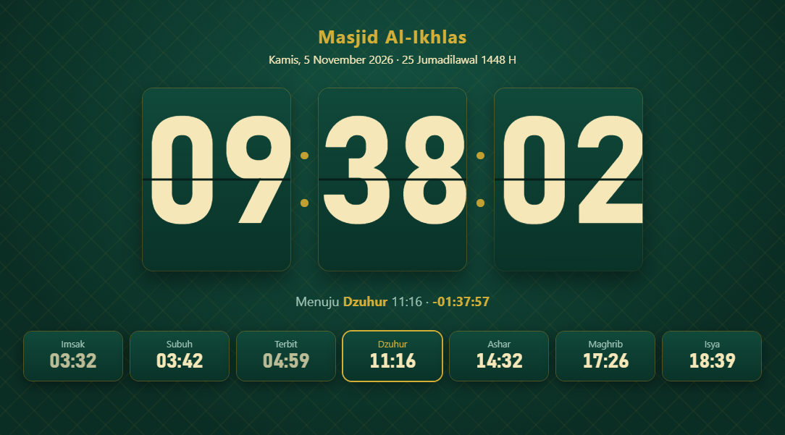
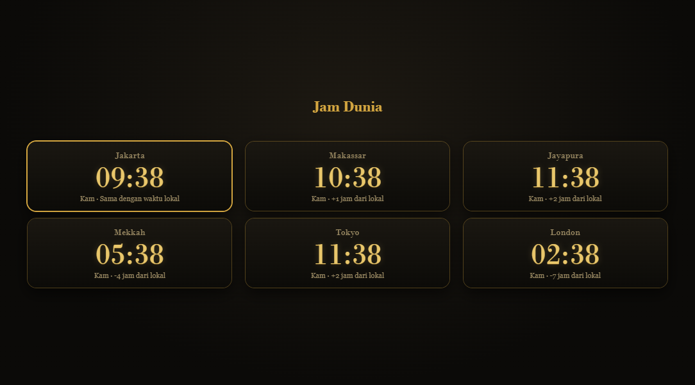
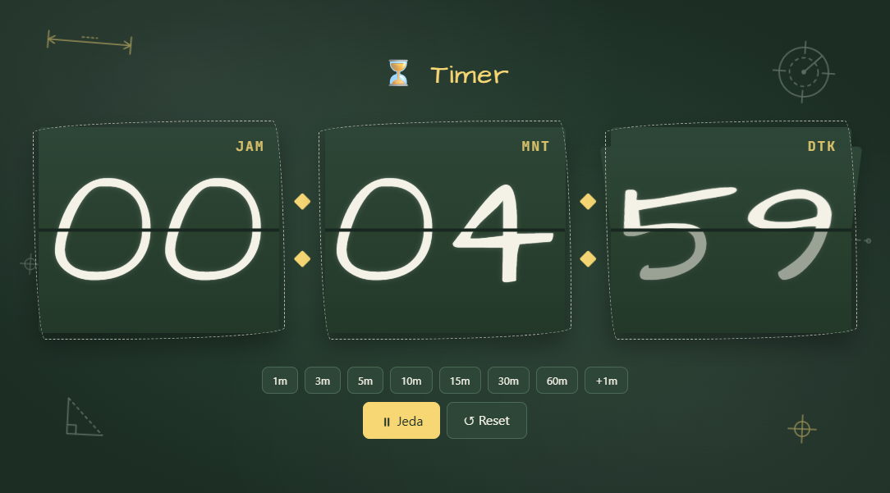

Flip clock untuk desktop dengan tanggal, cuaca, dan jadwal sholat. Pasang di monitor mana pun, atau jadikan screensaver.

Semua yang dibutuhkan jam meja, tanpa ribet.
Kartu berganti mulus setiap detik, dan ukurannya menyesuaikan layar.
Dihitung offline dengan parameter Kemenag. Ada mode Jam Masjid lengkap dengan iqamah.
Suhu, kelembapan, dan kualitas udara, dengan tanggal Masehi dan Hijriah.
Fullscreen di monitor pilihan, atau tampilan berbeda di tiap monitor.
Jadi screensaver Windows dengan tema yang sama, di semua monitor.
Ganti tema, kirim pesan, atau atur timer cukup dengan scan QR.
Dari klasik yang tenang sampai doodle yang hangat.






Pakai gratis tanpa batas waktu. Aktifkan Pro sekaligus mendukung developer lewat QRIS.
Dukung via QRIS langsung dari aplikasi: ⚙ Pengaturan → Lisensi → 💙 Dukung developer.